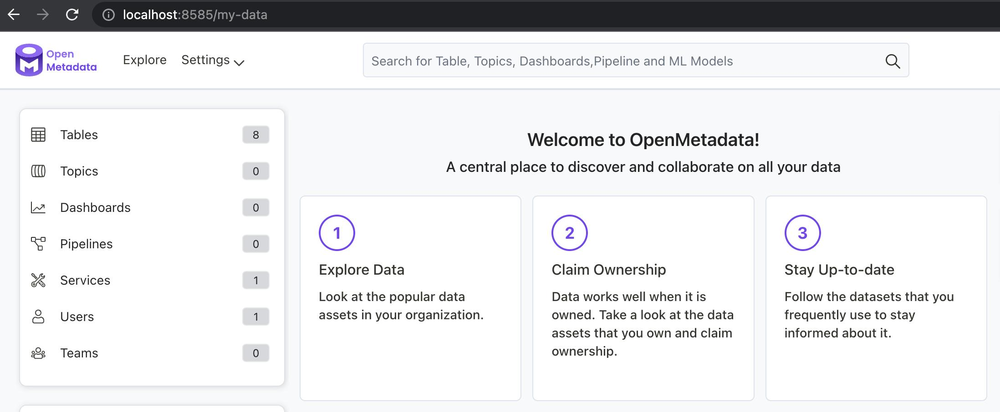

Install OpenMetadata
Requirements
Please ensure your host system meets the requirements listed below:
- Python 3.8+
- Docker 20.10.0+
- Docker Compose
Installing OpenMetadata
Clone the prefect-openmetadata repository
First, clone the latest version of the prefect-openmetadata Prefect Collection.
Then, navigate to the directory openmetadata-docker containing the docker-compose.yml file with the minimal requirements to get started with OpenMetadata.
Start OpenMetadata containers
You can start the containers with OpenMetadata components using:
docker compose up -d
This will create a docker network and containers with the following services:
openmetadata_mysql- metadata store that serves as a persistence layer holding your metadata,openmetadata_elasticsearch- indexing service to search the metadata catalog,openmetadata_server- the OpenMetadata UI and API server allowing you to discover insights and interact with your metadata.
Wait a couple of minutes until the setup is finished.
To check the status of all services, you may run the docker compose ps command to investigate the status of all Docker containers:
NAME COMMAND SERVICE STATUS PORTS
openmetadata_elasticsearch "/tini -- /usr/local…" elasticsearch running 0.0.0.0:9200->9200/tcp, 0.0.0.0:9300->9300/tcp
openmetadata_mysql "/entrypoint.sh mysq…" mysql running (healthy) 33060-33061/tcp
openmetadata_server "./openmetadata-star…" openmetadata-server running 0.0.0.0:8585->8585/tcp
Confirm you can access the OpenMetadata UI
Visit the following URL to confirm you can access the UI and start exploring OpenMetadata:
http://localhost:8585
You should see a page similar to the following as the landing page for the OpenMetadata UI.

Why should you use Prefect for metadata ingestion?
The challenge with the metadata ingestion is to ensure that this process can be automated and can run reliably, either on a regular interval, or ad-hoc. This is where Prefect can help.
Prefect 2.0 is a general-purpose workflow orchestration platform allowing you to build, run, schedule, and operationalize your data pipelines at scale. It supports both batch and streaming workflows and provides an excellent developer experience allowing you to run your flows locally and seamlessly move to production and to Cloud when you’re ready.
Among many other features, it natively supports:
- dynamic runtime-discoverable and modular workflows,
- passing data between tasks,
- running your workflows on various execution platforms (on-prem, cloud, Docker, Kubernetes) while maintaining privacy via a hybrid execution model,
- scaling out for parallel and concurrent execution with async, Dask, and Ray,
- various integrations through Prefect Collections - such as this one!
Install Prefect
You can install Prefect using a single command:
pip install -U "prefect>=2.0b"
This will not only install the client library, but also an embedded API server and UI, which can optionally be started using:
prefect orion start
If you navigate to the URL, you’ll be able to access a locally running Prefect Orion UI:
http://localhost:4200